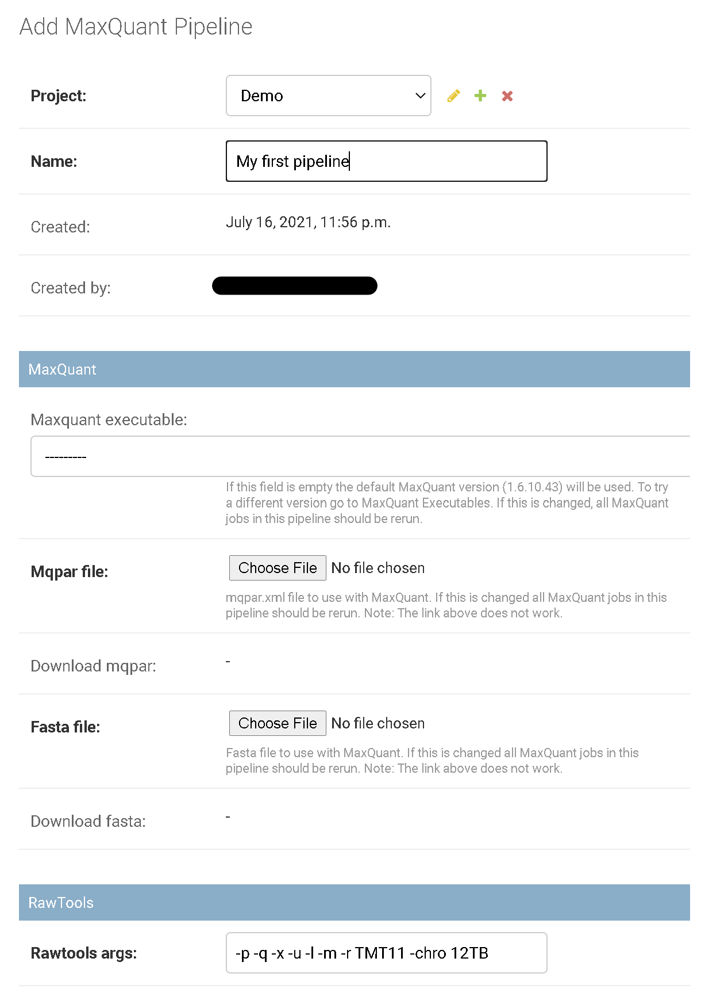

How to add a pipeline?
To add a new pipeline the user has to login to the admin panel and at least one project has to exist. Otherwise, contact your admin or read how to add a project.
Under site administration the click on MaxQuant Pipelines.

Click on the add sign behind Maxquant pipelines to get to the pipeline creation form:

Here, fill up the editable fields (name and a description).
- select the MaxQuant version. If no version is selected the default version will be used. If you want to try a different version read add MaxQuant version.
- Add a
Fastafile with amino-acid sequences of target proteins. - Add a
mqpar.xml(MaxQuant parameter file) generated with MaxQuant. The file should be generated with a single.rawfile and the MaxQuant version should match the version used in the pipeline. - Provide command line parameters for RawTools. Read Rawtools Help for more information.
Not all MaxQuant versions are compatible with Proteomics QC. We recommend using the default version if possible.
Finally, click on SAVE.